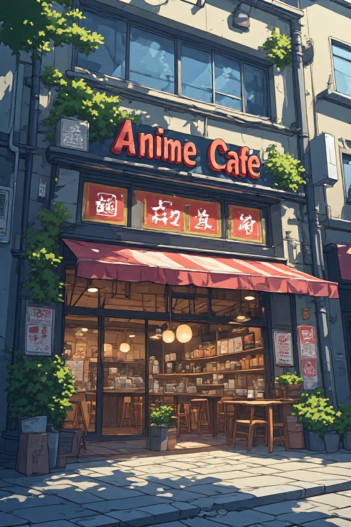
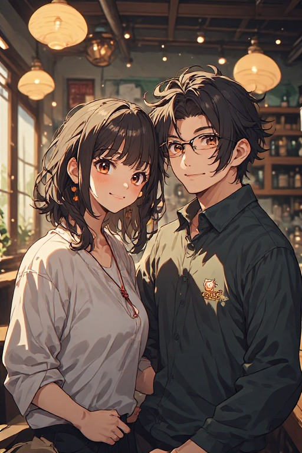

Quality First
We source premium beans and prepare every drink with care. Quality is never compromised, in coffee or in service.
Serving quality coffee and anime-inspired moments since day one.
ANIME-CAFE was born from a simple idea: create a welcoming space where anime fans and coffee lovers could gather. What started as a small dream in a modest corner shop has grown into a thriving community hub.
We believe everyone deserves a cozy place to relax, study, and connect. By blending our passion for quality coffee with anime culture, we created something truly unique—a sanctuary for students, professionals, and friends seeking comfort and community.

We source premium beans and prepare every drink with care. Quality is never compromised, in coffee or in service.
ANIME-CAFE is more than a cafe—it's a gathering place. We celebrate friendships, study sessions, and shared passions.
You can count on us. Same great coffee, same welcoming vibe, every single visit. That's our promise to you.

Founder & Owner
Sakura combined her love for anime culture and exceptional coffee to create ANIME-CAFE. With 10+ years of cafe experience, she built this space to inspire creativity, connection, and joy in every cup. When not at the cafe, she's sketching character designs and exploring new coffee origins.